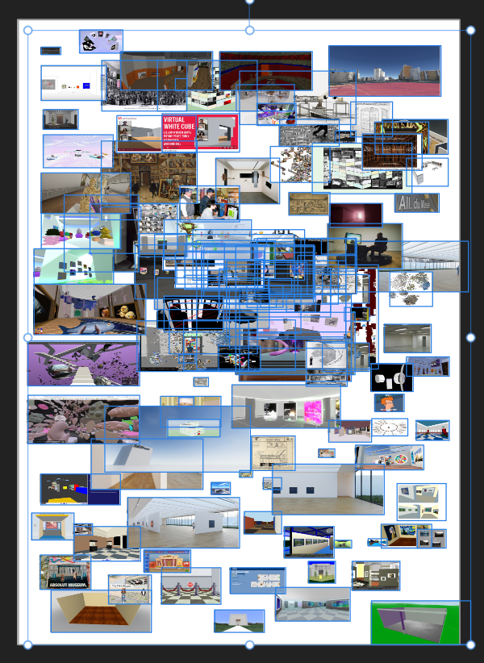

Chère lecteurice,
Arrivé à Linz depuis moins de deux semaines, j'explore la ville et ses environs entre églises baroques du XVIIIe, château gothique en Tchéquie, chemins forestiers.
À peine le temps et on me demande d'écrire sur le lien entre ma mobilité et ma recherche.
à la recherche d'un musée virtuel.
moins de deux semaines
Linz / forêt / église / Tchéquie / ordinateur
Je dois ré-ouvrir mon ordinateur avec tous les fichiers que j'avais tenté de mettre en pause durant l'été, de faire disparaître.
souris
VS
feuille blanche
crayon de papier
Migraine du flux
surgit lors de l'ouverture



Le bâtiment avait été vidé puis réaménagé, toutefois. Dans le quasi, on voyait des machines retirer les livres d'immenses salles d'archives souterraines. Puis des pelles mécaniques les déverser dans les camions. Enfin des rouleaux compresseurs les réduire en pâte à papier. Le spectateur du quasi conduisait une de ces machines. ^Ursula Le Guin,